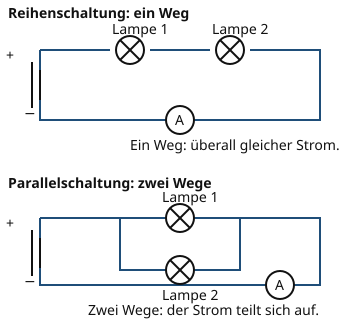

Reihen- und Parallelschaltung
Warum ist das wichtig?
Bei einer Lichterkette fällt die ganze Kette aus, wenn eine Lampe defekt ist. Bei den Lampen zu Hause leuchtet der Rest weiter, auch wenn eine Lampe kaputtgeht. Der Unterschied liegt in der Schaltung: Die Lichterkette ist in Reihe geschaltet, die Lampen im Haushalt sind parallel geschaltet.
Das steckt dahinter
In einer Reihenschaltung gibt es nur einen Weg. Der Strom fließt durch alle Bauteile nacheinander. Deshalb ist die Stromstärke überall gleich. Die Spannung teilt sich auf die Bauteile auf: Die Gesamtspannung ist die Summe der Teilspannungen.
| Messpunkt | Stromstärke | Spannung |
|---|---|---|
| Vor Lampe 1 | 0,20 A | 2,25 V |
| Zwischen den Lampen | 0,20 A | 2,25 V |
| Gesamt | 0,20 A | 4,50 V |
In einer Parallelschaltung gibt es mehrere Wege. An jeder Verzweigung teilt sich der Strom auf. Die Stromstärke im ganzen Kreis ist die Summe der Teilströme. An allen Zweigen liegt dieselbe Spannung an.
| Messpunkt | Stromstärke | Spannung |
|---|---|---|
| Zweig 1 | 0,30 A | 4,50 V |
| Zweig 2 | 0,30 A | 4,50 V |
| Gesamt | 0,60 A | 4,50 V |

Oben gibt es einen Weg, unten zwei. Vergleiche die Messwerte in den Tabellen.
Quelle: eigene Zeichnung. Lizenz: CC-BY-4.0.- Reihenschaltung
In einer Reihenschaltung liegen die Bauteile hintereinander auf einem einzigen Weg. Die Stromstärke ist überall gleich, die Spannungen addieren sich.
- Parallelschaltung
In einer Parallelschaltung liegen die Bauteile auf mehreren Wegen nebeneinander. An allen Zweigen liegt dieselbe Spannung an, die Stromstärken addieren sich.
Ein Beispiel
Zwei Lampen an derselben Batterie
Zwei gleiche Lampen liegen an einer Batterie mit 4,5 V. In Reihe leuchten beide schwach, denn jede Lampe bekommt nur 2,25 V. Parallel leuchten beide hell, denn jede bekommt die vollen 4,5 V. Dafür liefert die Batterie parallel den doppelten Strom.
| Reihenschaltung | Der Kreis ist unterbrochen. Beide Lampen gehen aus. |
|---|---|
| Parallelschaltung | Nur der betroffene Zweig ist unterbrochen. Die andere Lampe leuchtet weiter. |
Übung
Übung
Lösung
Eine Parallelschaltung richtige Antwort
In B teilt sich der Weg an einer Verzweigung auf. Die beiden Lampen liegen in zwei Zweigen nebeneinander.
Eine Reihenschaltung
In A liegen die Lampen hintereinander auf einem Weg. Das ist die Reihenschaltung.
Einen offenen Stromkreis
Beide Kreise sind geschlossen. Der Unterschied liegt in der Zahl der Wege, nicht darin, ob der Kreis offen ist.
In B gibt es zwei Wege mit je einer Lampe. Das ist eine Parallelschaltung.
Mehr dazu:
Übung
Drei Beispielaufgaben, jede mit ihrer Lösung:
Aufgabe Nr. 1
In einer Parallelschaltung fließt durch den ersten Zweig 0,2 A und durch den zweiten Zweig 0,3 A. Wie groß ist die Stromstärke im ganzen Kreis?
Tipp
In einer Parallelschaltung gilt: I_ges = I_1 + I_2.
Lösung
Richtige Antwort: 0,5 A (erlaubte Abweichung: 0,001 A)
Aufgabe Nr. 2
In einer Parallelschaltung fließt durch den ersten Zweig 0,3 A und durch den zweiten Zweig 0,2 A. Wie groß ist die Stromstärke im ganzen Kreis?
Tipp
In einer Parallelschaltung gilt: I_ges = I_1 + I_2.
Lösung
Richtige Antwort: 0,5 A (erlaubte Abweichung: 0,001 A)
Aufgabe Nr. 3
In einer Parallelschaltung fließt durch den ersten Zweig 0,3 A und durch den zweiten Zweig 0,3 A. Wie groß ist die Stromstärke im ganzen Kreis?
Tipp
In einer Parallelschaltung gilt: I_ges = I_1 + I_2.
Lösung
Richtige Antwort: 0,6 A (erlaubte Abweichung: 0,001 A)
Übung
Drei Beispielaufgaben, jede mit ihrer Lösung:
Aufgabe Nr. 1
In einer Reihenschaltung liegen an der ersten Lampe 3 V und an der zweiten Lampe 1,5 V. Wie groß ist die Gesamtspannung?
Tipp
In einer Reihenschaltung gilt: U_ges = U_1 + U_2.
Lösung
Richtige Antwort: 4,5 V (erlaubte Abweichung: 0,001 V)
Aufgabe Nr. 2
In einer Reihenschaltung liegen an der ersten Lampe 2 V und an der zweiten Lampe 2 V. Wie groß ist die Gesamtspannung?
Tipp
In einer Reihenschaltung gilt: U_ges = U_1 + U_2.
Lösung
Richtige Antwort: 4 V (erlaubte Abweichung: 0,001 V)
Aufgabe Nr. 3
In einer Reihenschaltung liegen an der ersten Lampe 2 V und an der zweiten Lampe 2,5 V. Wie groß ist die Gesamtspannung?
Tipp
In einer Reihenschaltung gilt: U_ges = U_1 + U_2.
Lösung
Richtige Antwort: 4,5 V (erlaubte Abweichung: 0,001 V)
Übung
Lösung
Jeweils 4,5 V. richtige Antwort
In einer Parallelschaltung liegt an jedem Zweig dieselbe Spannung an wie an der Quelle.
Jeweils 2,25 V, weil sich die Spannung aufteilt.
Das gilt für die Reihenschaltung. In einer Parallelschaltung teilt sich die Spannung nicht auf.
Zusammen 4,5 V, verteilt nach der Helligkeit.
Die Spannung verteilt sich nicht nach der Helligkeit. An beiden Zweigen liegen die vollen 4,5 V an.
In einer Parallelschaltung ist die Spannung an allen Zweigen gleich groß.
Mehr dazu:
Übung
Lösung
Die ganze Kette erlischt, weil der Stromkreis unterbrochen ist. richtige Antwort
In einer Reihenschaltung gibt es nur einen Weg. Ist er an einer Stelle unterbrochen, fließt nirgends mehr Strom.
Nur die kaputte Lampe erlischt, die anderen leuchten weiter.
Das wäre bei einer Parallelschaltung so. Dort hat jeder Zweig seinen eigenen Weg.
Die anderen Lampen leuchten heller, weil mehr Strom übrig ist.
Es fließt gar kein Strom mehr, weil der einzige Weg unterbrochen ist.
In einer Reihenschaltung hängen alle Bauteile an einem Weg. Fällt eines aus, ist der Kreis offen.
Mehr dazu: